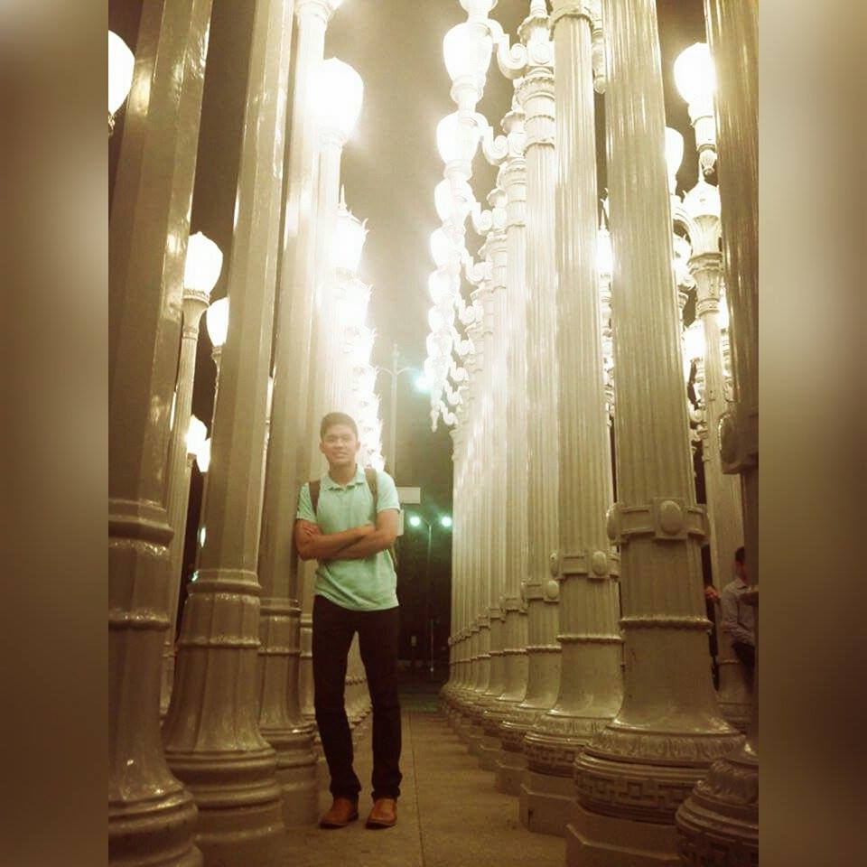
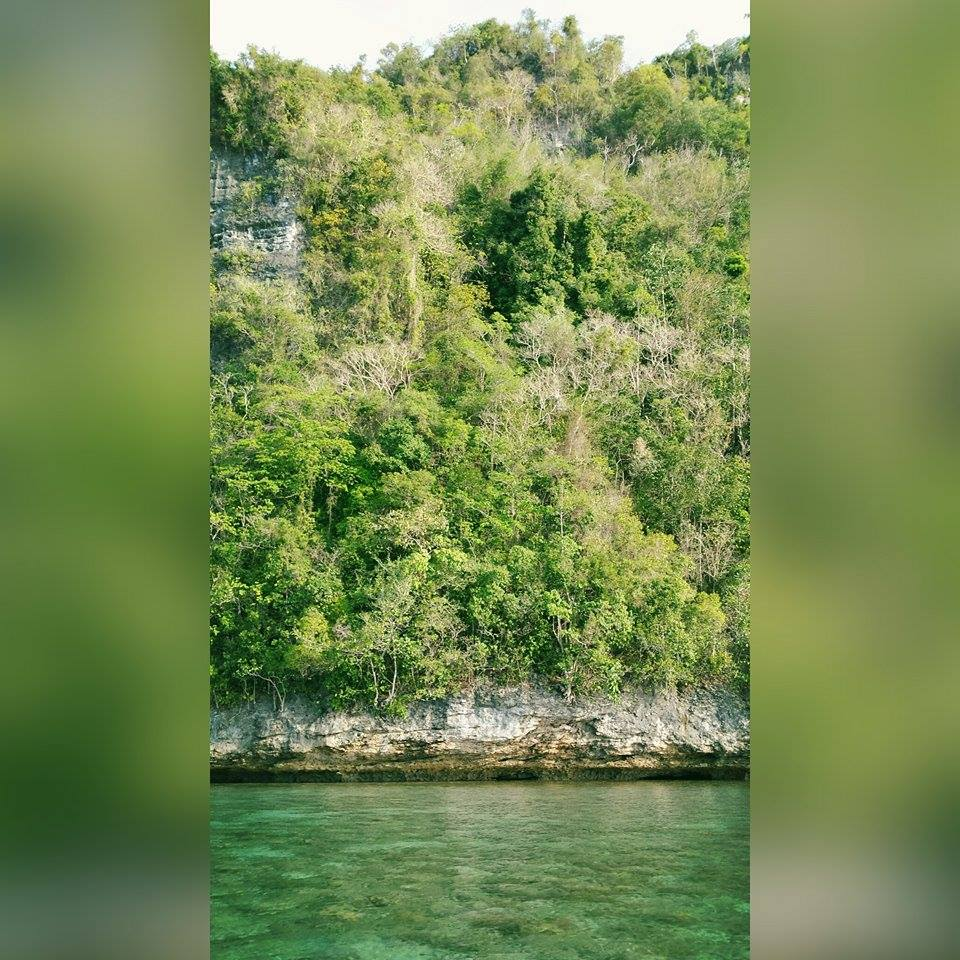
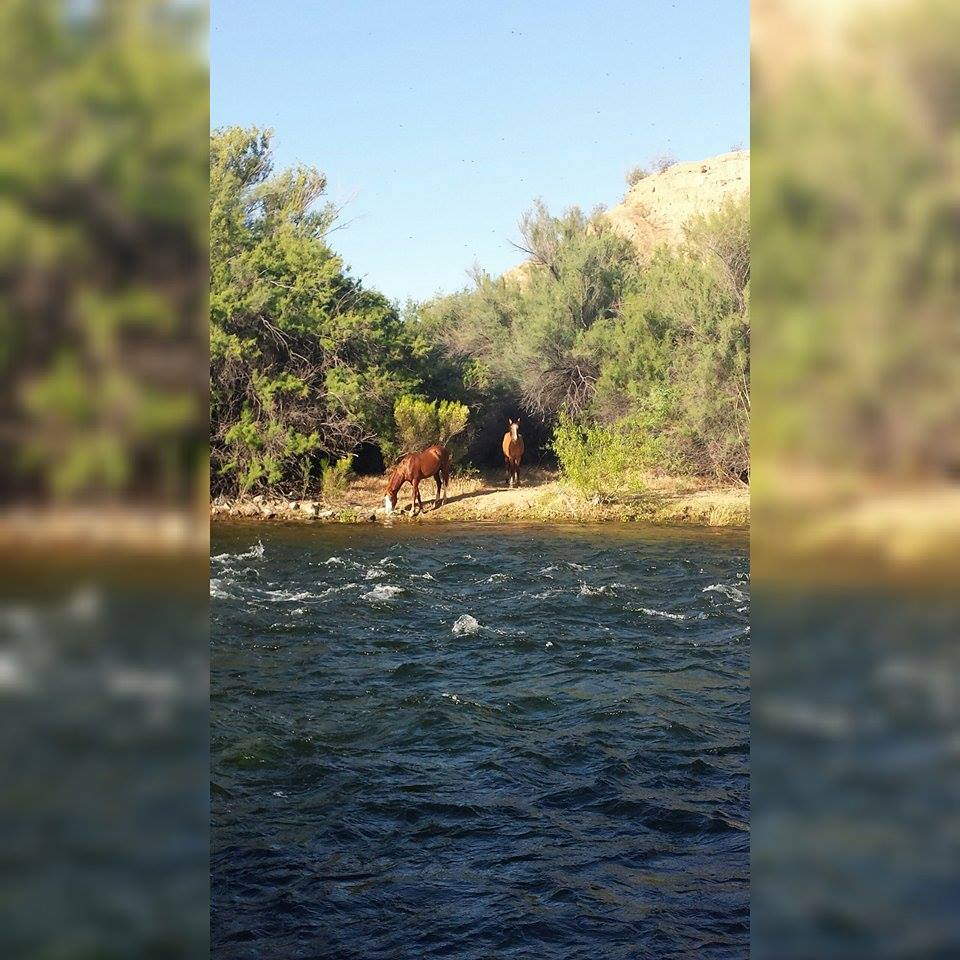
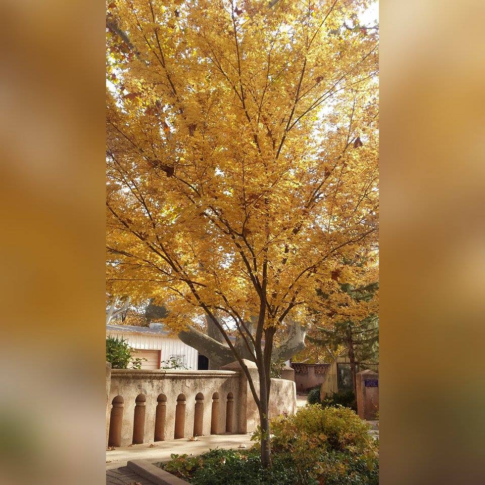

Paul Chua
Front-End Apprentice


Featured Work:
This section will feature my projects via links. So far I've done two projects including this one. The first one was an "About me" page with simple changes in given html and css codes. This project is definitely more complicated...

About Me:
I was introduced to life in the islands of the Philippines. So yes, I am filipino. Anyways, I'm currently attending Arizona State University soon majoring in Computer Science. Long story short, I enjoy being an athlete, musician, and a front-end web developer (soon).
